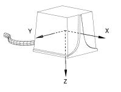
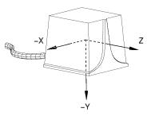

Ascension Flock of Birds Library
Introduction
libfob is a C++ interface to Ascension Technology Corporation's Flock of Birds position and orientation measurement system.
Overview
libfob provides an interface to the Flock of Birds hardware. Tedious and error prone tasks such as configuring the flock's data mode, sending commands to the flock, and decoding the data received from the flock are all hidden behind libfob's interface.
Programming the flock hardware can be hard. The programmer has to worry about in which format the flock returns data (pos/quat, quat, mat, pos, angles, pos/angles, etc.) Configuring the flock is error prone and hard to get correct. For older version of the Flock of Birds hardware, simply starting the flock can be a chore.
In contrast, libfob has been designed to be easy to use. The programmer simply tells the library the following:
- Serial port the flock is attached to (ex: "/dev/ttyS0").
- Hemisphere the flock should operate in (ex: "DOWN").
- Maximum speed the flock can operate ("FAST" for newer flock hardware "SLOW" for older hardware).
The programmer can then configure the flock on a per bird basis. Any combination of the following information can be retrieved from a bird in the flock:
- Position
- Orientation
- Buttons
At any time, the programmer can retrieve the above information in any of the following formats:
- Quaternion (represents orientation)
- Vector (represent position)
- 4x4 Matrix (represents position/orientation)
The programmer pays no penalty for retrieving data in one format over another. Internally libfob configures the flock's hardware to send data as fast as possible. libfob maintains multiple representations of the data for fast retrieval by the programmer.
libfob also provides facilities to correct orientation information for incorrectly installed bird sensors.
The orientation returned by the flock's hardware are usually returned by the reference frame represented in figure 1.

However, libfob returns orientation information in relation to the reference frame given in figure 2. This is the same reference frame used by OpenGL.

Example
Below is a small example on how to use libfob. For more in-depth information on how to use the library, consult the API documentation.
// open the flock of birds on serial port 0 // // the sensor is installed in the ceiling so, // tell the flock that all birds will operate in the DOWN // hemisphere // // we have a fairly new version of the fob hardware, so // run it at a high baud rate fob flock( "/dev/ttyS0", fob::DOWN, fob::FAST ); if( !flock ) { std::cerr << "fatal: " << flock.get_error( ) << std::endl; return 1; } //get a list of birds connected to the flock fob::bird_list& birds = flock.get_birds( ); //report how many birds are present std::cout << "number of birds: " << birds.size( ) << std::endl; //for each bird, set that we want position and orientation information for( unsigned int i = 0; i < birds.size( ); ++i ) { if( !birds[ i ]->set_mode( fob::POSITION | fob::ORIENTATION ) ) { std::cerr << "fatal: " << flock.get_error( ) << std::endl; return 1; } } //birds configured, set the flock flying flock.fly( ); //let the bird start up . . . sleep( 1 ); //report position and orientation for each bird float pos[ 3 ]; float quat[ 4 ]; while( 1 ) { for( unsigned int i = 0; i < num_birds; ++i ) { //get position and orientation information from the bird birds[ i ]->get_position( pos ); birds[ i ]->get_quaternion( quat ); //report std::cout << i << ": p: " << pos[ 0 ] << " " << pos[ 1 ] << " " << pos[ 2 ] << " q: " << quat[ 0 ] << " " << quat[ 1 ] << " " << quat[ 2 ] << quat[ 3 ] << std::endl; } } |
Documentation
API documentation can be found here. You can also find Ascension's Flock of Bird's installation/programmer manual here.
Here you can find an example of a hardware configuration that is know to work with libfob.
Supported Hardware
libfob is capable of running with one/multiple transmitters/receivers. The library has been tested using the flock's RS232 serial interface. The RS422/485 interfaces are untested. The flock is assumed to be in "normal" addressing mode (as opposed to "expanded" or "super-expanded").
If pin 7 of the RS232 capable is attached, then libfob is capable of performing a hardware reset of the flock. This is very important since it is fairly easy to put older version of flock hardware into an error state.
Supported Platforms
libfob is known to work on the following platforms:
- Linux
- Cygwin (you must install m4 in order to run the configure script)
libfob should work on any UNIX platform. However, only the Linux platform has been tested. If you have successfully built and used libfob on a non-Linux platform, please e-mail the developer mailing list.
Internally libfob uses POSIX pthreads and UNIX's termios serial interface. Alternatives to the above libraries will have to be found when porting libfob to any non-UNIX platform.
TODO
- Port to WIN32 (native, Cygwin already works)
Download
The latest verion of libfob can be found at Source Forge.
You can also retrieve the library via CVS.
Support
Feel free to join our developer mailing list (very low traffic): fob-devel Subscription Manager.
Please send all comments, complaints, code submission, support requests, etc to the developer mailing list.
For a list of know issues, check libfob's bug tracker.
You can also contact the primary developer Nathan Cournia, although contacting the developer mailing list is preferred.